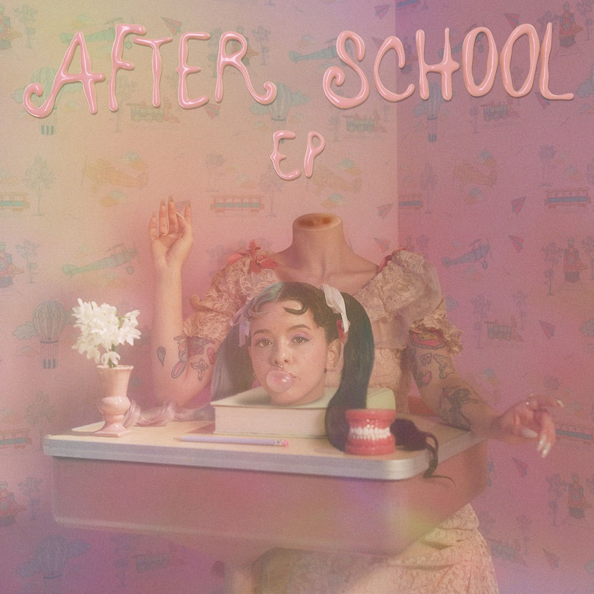

In January 2020, Martinez announced an EP titled After School, revealing the title through her Instagram stories. The EP would serve as a deluxe edition of K-12,
however is not connected to K-12 in terms of timeline. On February 10, 2020, Martinez's management issued the first single from After School, titled "Copy Cat".
The song features American rapper and songwriter Tierra Whack. This marks the first time that Whack has worked in a professional capacity with Melanie Martinez, and
the first time that Melanie Martinez has featured another artist in one of her songs. Martinez later released a second single from the EP, "Fire Drill",
on June 26, 2020. The song had previously been featured in the credits sequence of her film, K-12.
Her song "Play Date", originally released on the deluxe edition of Cry Baby in 2015, became one of the top 100 most-played songs on Spotify in the US after gaining
popularity on the video-sharing application, TikTok. Martinez is currently writing a music video for "Play Date", which she plans to shoot at her home.